라이라에서 사용하고 언리얼에서 전폭으로 지원중인 GameFeature플러그인에 대해 알아보자
기존의 게임 규칙을 정의하던 GameMode라는 모듈에서는 점령전, 깃발뺏기등의 규칙을 정의하는데 사용했다면
GameFeature는 이 모듈을 더 작은단위로 쪼개서 사용 가능하다는것 같다.
GameFeature플러그인을 추가했으면
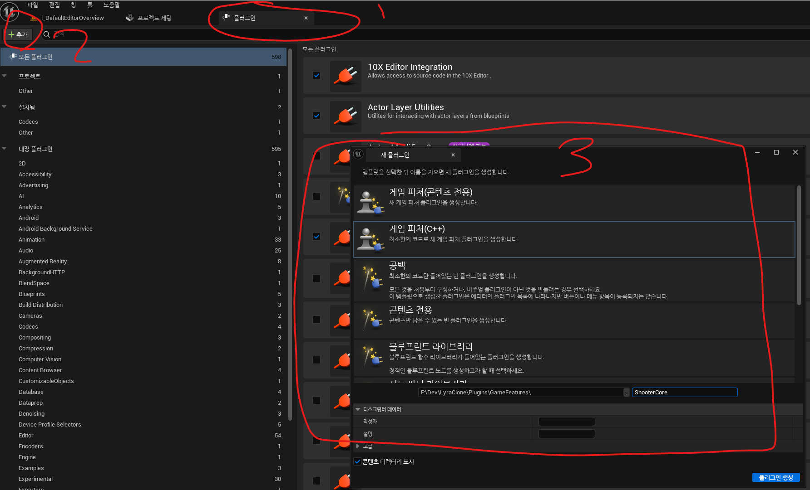
추가버튼을 눌러서 GameFeature을 추가할 수 있다. (ShooterCore라는 이름으로 만들었다)
GameFeature는 아래사진의 GameFeatures폴더 밑에 있어야만 동작한다.
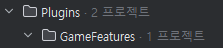
아무튼 위처럼 GameFeature을 추가하면 내가 GameFeature을 사용해서 ShooterCore라는 Plugin을 만든 것이다. 이제 ShooterCore플러그인을 추가한다.
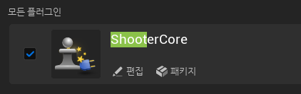
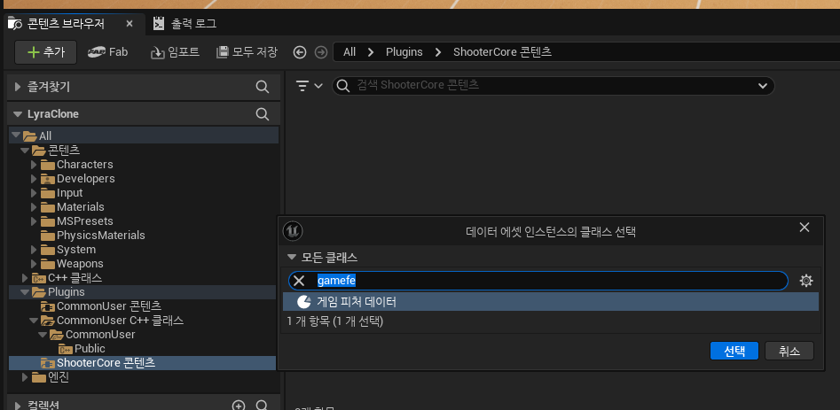
플러그인을 추가하면 Plugin폴더에 ShooterCore콘텐츠 폴더가 생기는데 거기에 게임피처 데이터로 DataAsset을 만든다
해당 DataAsset의 데이터를 보면 아래처럼 생겼다.
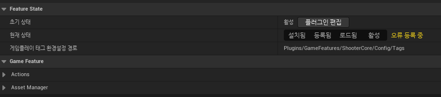
현재 상태
설치됨 : GameFeature 플러그인이 설치만 되어있는 상태
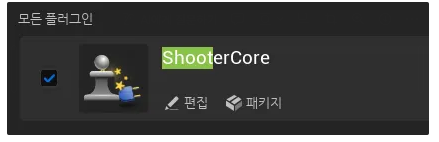
여기에 체크만 안되어있다고 생각하면된다.
등록됨 : GameFeature 플러그인을 사용한다고 체크를 한 상태 (뭐 빌드에 포함이 되는 정도일듯?)
로드됨 : GameFeature가 메모리에 올라감
액티브 : GameFeature가 실행중임
GameFeature가 왜좋냐 하면
위의 멤버들을 보면 Action이라는 멤버가 있는데
이 액션에다가 “모든 ACharacter가 날 수 있음” 이라는 기능을 넣어두고 런타임중에 이 GameFeature을 활성화시키면
그 순간 모든 ACharacter 가 날 수 있게된다. (WOW!!!)
마지막으로 위의 멤버의 AssetManager를 보면 이 GameFeature에서만 사용할 에셋들을 등록할 수 있게 되어있다.
ShooterCore Plugin 컨텐츠 폴더에 DefaultExperience처럼 폴더와 파일들을 넣어준다.
(userfacingexperience, map, experiencedefinition, pawndata)
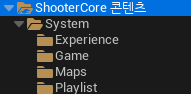
그리고 플러그인의 Root폴더에 위에서 설명한 GameFeatureDataAsset를 만들고 해당 데이터 에셋의 Assetmanager부분에 하위에 추가한 항목들을 에셋 스캔에 포함시키면된다
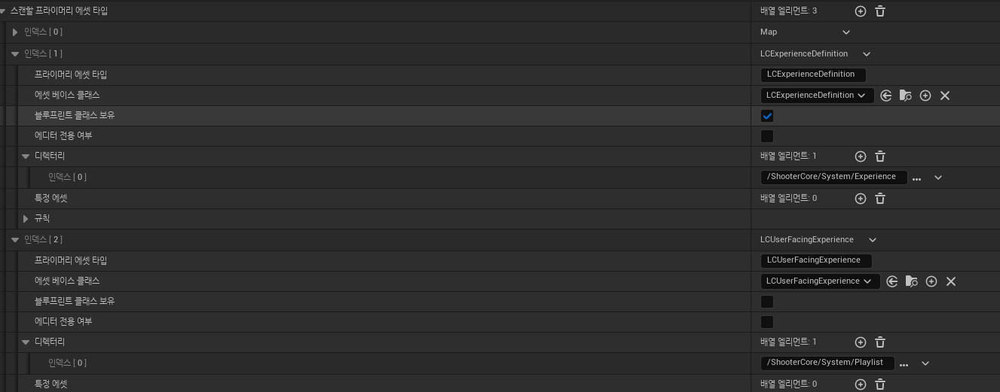
그럼 스캔된 에셋에 ShooterCore_UserFacingExperience가 포함되어 포탈이 생기게 된다.
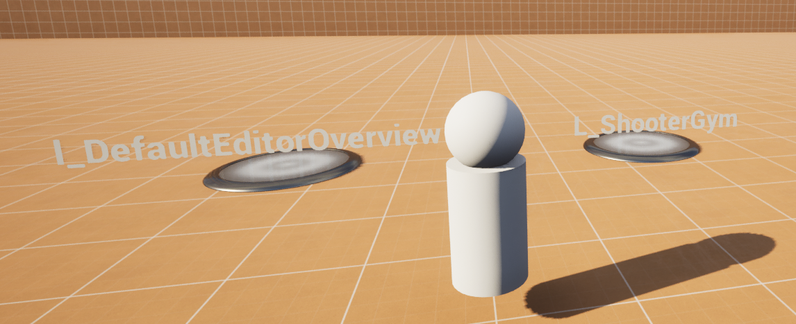
근데 위처럼하면 맵은 로드되어 들어가지는데 ExperienceDefinition은 로드가 안된상태라 들어갈 수 없다. 그 이유는 아직 CommonUser시스템을 통해 받은 URL을 사용하지 않았기 때문..
Level이 로드될때 호출되는 InitGame단계의 ALCGameModeBase::HandleMatchAssignmentIfNotExpectingOne 함수를 확인한다.
ALCGameModeBase::HandleMatchAssignmentIfNotExpectingOne 함수는 현재 들어온 Experience가 의도된것인지 확인하는 역할을 한다.
void ALCGameModeBase::HandleMatchAssignmentIfNotExpectingOne()
{
...
// ?Experience=Name // 이렇게 파라미터가 넘어오는데 여기서 Name을 뽑아서 사용한다.
// ParseOption함수를 사용하면 Experience가 가리키는 값을 가져온다.
// 우리가 앞서, URL과 함께 ExtraArgs로 넘겼던 정보는 OptionString에 저장되어잇다.
if (!ExperienceId.IsValid() && UGameplayStatics::HasOption(OptionsString, TEXT("Experience")))
{
const FString ExperienceFromOptions = UGameplayStatics::ParseOption(OptionsString, TEXT("Experience"));
ExperienceId = FPrimaryAssetId(FPrimaryAssetType(ULCExperienceManagerComponent::StaticClass()->GetFName()), FName(*ExperienceFromOptions));
}
OnMatchAssignmentGiven(ExperienceId);
}
우리는 ULCUserFacingExperience 에서 아래와 같이 URL을 만들어 주었기 때문에
UCommonSession_HostSessionRequest* ULCUserFacingExperience::CreateHostingRequest() const
{
const FString ExperienceName = ExperienceID.PrimaryAssetName.ToString();
UCommonSession_HostSessionRequest* Result = NewObject<UCommonSession_HostSessionRequest>();
Result->MapID = MapID;
Result->ExtraArgs.Add(TEXT("Experience"), ExperienceName);
return Result;
}
?ExperienceName=B_LCShooterGame_ControlPoint 이런식으로 들어오게 된다.
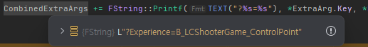
이런식으로 Arg가 들어온다.
ExperienceId = FPrimaryAssetId(FPrimaryAssetType("LCExperienceDefinition"), FName("B_LCShooterGame_ControlPoint "));
즉 이렇게 된다는 뜻
UCLASS()
class LYRACLONE_API ULCExperienceDefinition : public UPrimaryDataAsset
{
GENERATED_BODY()
public:
ULCExperienceDefinition(const FObjectInitializer& ObjectInitializer = FObjectInitializer::Get());
...
UPROPERTY(EditDefaultsOnly, Category = "Gameplay")
TArray<FString> GameFeaturesToEnable;
};
GameFeaturesToEnable 이 친구가 기억날것이다.
이 친구들을 로드하기 위해
Experience로드 과정에 GameFeaturePluginLoad를 추가한다.
void ULCExperienceManagerComponent::OnExperienceLoadComplete() // GameFeature로드 및 활성화
{
// Look FrameNumber carefully
static int32 OnExperienceLoadComplete_FrameNumber = GFrameNumber;
check(LoadState == ELCExperienceLoadState::Loading);
check(CurrentExperience);
// 이전 활성화된 GameFeature Plugin의 URL 클리어
GameFeaturePluginURLs.Reset();
auto CollectGameFeaturePluginURLS = [This = this] (const UPrimaryDataAsset* Context, const TArray<FString>& FeaturePluginList)
{
// GameFeaturePluginList를 순회하며, PluginUYRL을 ExperienceManagerComponent의 GameFeaturePluginURLS에 추가해준다.
for (const FString& PluginName : FeaturePluginList)
{
FString PluginURL;
if (UGameFeaturesSubsystem::Get().GetPluginURLByName(PluginName, PluginURL)) // 플러그인 이름 넣으면 플러그인 URL반환해주는 함수
{
This->GameFeaturePluginURLs.AddUnique(PluginURL);
}
}
};
// GameFeaturesToEnable에 있는 Plugin만 일단 활성화할 GameFeature Plugin 후보군으로 등록
CollectGameFeaturePluginURLS(CurrentExperience, CurrentExperience->GameFeaturesToEnable);
// GameFeaturePluginURL에 등록된 Plugin을 로딩 및 활성화
NumGameFeaturePluginsLoading = GameFeaturePluginURLs.Num();
if ( NumGameFeaturePluginsLoading )
{
LoadState = ELCExperienceLoadState::LoadingGameFeatures;
for (const FString& PluginURL : GameFeaturePluginURLs)
{
// 매 plugin이 로딩 및 활성화 이후 OnGameFeaturePluginLoadComplete 콜백 함수 등록 // 로드 끝나면 해당 함수 호출된다.
UGameFeaturesSubsystem::Get().LoadAndActivateGameFeaturePlugin(PluginURL, FGameFeaturePluginLoadComplete::CreateUObject(this ,&ThisClass::OnGameFeaturePluginLoadComplete));
}
}
}
void ULCExperienceManagerComponent::OnGameFeaturePluginLoadComplete(const UE::GameFeatures::FResult& Result)
{
// 매 GameFeature plugin이 로딩될 때 이 함수가 콜백으로 불린다.
NumGameFeaturePluginsLoading--;
if (0 == NumGameFeaturePluginsLoading)
{
// GameFeaturePlugin 로딩과 활성화과 끝났다면 UGameFeatureAction을 활성화한다.
OnExperienceFullLoadCompleted();
}
// 해당 함수가 불리는 것은 앞서 보았던 StreamableDelegateDelayHelper에 의해 불림
}
GameFeatureAction Input
HeroComponent를 갖는 B_DefaultHero를 상속받아 각 Experience에서 사용할 캐릭터를 만들고 세팅한다.
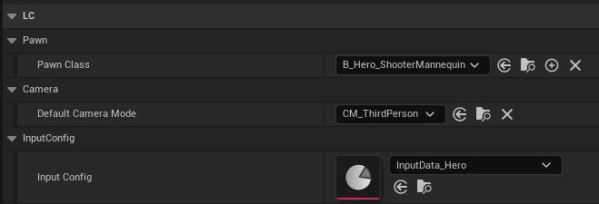
사용자가 사용하는 캐릭터는 Experience마다 input이 달라질수도 있을것이다.
지금 이 Input처리를 HeroComponent에서 아래처럼 하고있는데
void ULCHeroComponent::InitializePlayerInput(UInputComponent* PlayerInputComponent)
{
// PawnExtensionComponent -> PawnData - >InputConfig 존재 유무 판단.
if (ULCPawnExtensionComponent* PawnExtensionComponent = ULCPawnExtensionComponent::FindPawnExtensionComponent(Pawn))
{
if (const ULCPawnData* PawnData = PawnExtensionComponent->GetPawnData<ULCPawnData>())
{
if (const ULCInputConfig* InputConfig = PawnData->InputConfig)
{
const FLCGameplayTags GameplayTags = FLCGameplayTags::Get();
// HeroComponent가지고 있는 InputMapping Context를 순회하며 EnhancedInputLocalPlayerSubsystem에 추가
for (const FLCMappableConfigPair& Pair : DefaultInputConfigs)
{
if (Pair.bShouldActivateAutomatically)
{
FModifyContextOptions Options = {};
Options.bIgnoreAllPressedKeysUntilRelease = false;
// 내부적으로 Input Mapping Context를 추가한다.
SubSystem->AddPlayerMappableConfig(Pair.Config.LoadSynchronous(), Options);
}
}
ULCInputComponent* LCIC = CastChecked<ULCInputComponent>(PlayerInputComponent);
{
LCIC->BindNativeAction(InputConfig, GameplayTags.InputTag_Move, ETriggerEvent::Triggered, this ,&ThisClass::Input_Move, false);
LCIC->BindNativeAction(InputConfig, GameplayTags.InputTag_Look_Mouse, ETriggerEvent::Triggered, this ,&ThisClass::Input_LookMouse, false);
}
}
}
}
}
볼드처리 한 부분을 보면 어떤 인풋에 어떤액션과 함수가 있을줄 알고 여기에 코드를 작성하고 있는데딱봐도 하드코딩이 심할것으로 예측된다.
이걸 피하기 위해 이제 Input은 Action과 연결지을것이다.
Action은 GameFeatrue에 종속적으로 GameFeature이 꺼지면 사용 가능했던 액션들은 사용 불가능해진다.
ULCExperienceActionSet 클래스는 GameFeature가 사용할 액션을 모아놓은 Wrapper클래스이다.
class LYRACLONE_API ULCExperienceActionSet : public UPrimaryDataAsset
{
GENERATED_BODY()
public:
ULCExperienceActionSet();
UPROPERTY(EditAnywhere, Category="Actions To Perform")
TArray<TObjectPtr<UGameFeatureAction>> Actions;
};
이 클래스를 ExperienceDefinition이 들고있는다.
UCLASS()
class LYRACLONE_API ULCExperienceDefinition : public UPrimaryDataAsset
{
GENERATED_BODY()
public:
ULCExperienceDefinition(const FObjectInitializer& ObjectInitializer = FObjectInitializer::Get());
UPROPERTY(EditDefaultsOnly, Category = "Gameplay")
TObjectPtr<class ULCPawnData> DefaultPawnData;
/*
아래 변수는 단순히 마킹 및 기억용으로 남겨둔다.
- 게임모드에 따른 GameFeature plugin을 로딩하는데 이에 대한 연결고리라고 생각하면 된다.
- 후일 ShooterCore 관련 Plugin할때 사용할거임
*/
UPROPERTY(EditDefaultsOnly, Category = "Gameplay")
TArray<FString> GameFeaturesToEnable;
// ExperienceActionSet은 UGameFeatureAction의 Set이며, Gameplay용도에 맞게 분류의 목적으로 사용한다.
UPROPERTY(EditDefaultsOnly, Category = "Gameplay")
TArray<TObjectPtr<class ULCExperienceActionSet>> ActionSets;
// 일반적인 GameFeatureAction으로서 추가
UPROPERTY(EditDefaultsOnly, Category = "Action")
TArray<TObjectPtr<class UGameFeatureAction>> Actions;
};
코드를 보면 UGameFeatureAction 의 Wrapper라던 ULCExperienceActionSet 을 들고있는데 UGameFeatureAction 를 또 들고있는걸 볼 수 있는데
Wrap을 하는 이유는 분류의 목적이라고 한다.
UGameFeatureAction 의 기능을 보면 기본적으로 아래의 기능들을 제공한다.
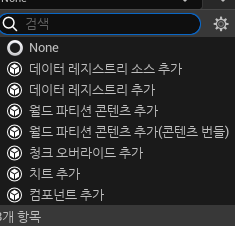
Experience의 로딩이 끝나면 Experience내의 Action들을 로딩해준다.
코드에서 집중할부분은 OnGameFeatureActivating 함수를 위해 WorldContext를 가져오고 바인딩 해야한다 정
void ULCExperienceManagerComponent::OnExperienceFullLoadCompleted()
{
check(LoadState != ELCExperienceLoadState::Loaded);
// 여기서 Action이 실행된다.
// GameFeature Plugin의 로딩과 활성화 이후 GameFeature Action들을 활성화 시키자
{
LoadState = ELCExperienceLoadState::ExecutingActions;
// GameFeatureAction 활성화를 위한 Context준비
FGameFeatureActivatingContext Context;
{
// World의 Handle세팅
// 아래코드는 PIE에서 여러 클라이언트를 편하게 테스트하기위해 사용한다.
// 현재 클라이언트의 WorldContext를 GEngine->GetWorldContextFromWorld로 가져옴으로
// 액션에 현재 액션을 사용하려고하는 올바른 클라이언트의 컨텍스트를 넘겨줄 수있다.
const FWorldContext* ExistingWorldContext = GEngine->GetWorldContextFromWorld(GetWorld());
if (ExistingWorldContext)
{
Context.SetRequiredWorldContextHandle(ExistingWorldContext->ContextHandle);
}
}
auto ActivateListOfActions = [&Context](const TArray<UGameFeatureAction*>& ActionList)
{
for (UGameFeatureAction* Action : ActionList)
{
// 명시적으로 GameFeatureAction에 대해 Registering -> Loading -> Activating순으로 호출한다.
if (Action)
{
Action->OnGameFeatureLoading();
Action->OnGameFeatureLoading();
Action->OnGameFeatureActivating(Context);
}
}
};
// 1. Experience의 actions
ActivateListOfActions(CurrentExperience->Actions);
// 2. Experience의 ActionSets
for (const ULCExperienceActionSet* ActionSet : CurrentExperience->ActionSets)
{
ActivateListOfActions(ActionSet->Actions);
}
}
LoadState = ELCExperienceLoadState::Loaded;
OnExperienceLoaded.Broadcast(CurrentExperience);
OnExperienceLoaded.Clear();
}
GameFeatureAction의 Base로 사용할 Class
헤더
UCLASS(Abstract)
class UGameFeatureAction_WorldActionBase : public UGameFeatureAction
{
GENERATED_BODY()
public:
/**
* UGameFeatureAction's interface
*/
virtual void OnGameFeatureActivating(FGameFeatureActivatingContext& Context) override;
/**
* interface
*/
virtual void AddToWorld(const FWorldContext& WorldContext, const FGameFeatureStateChangeContext& ChangeContext) PURE_VIRTUAL(UGameFeatureAction_WorldActionBase::AddToWorld, );
};
cpp
#include UE_INLINE_GENERATED_CPP_BY_NAME(GameFeatureAction_WorldActionBase)
void UGameFeatureAction_WorldActionBase::OnGameFeatureActivating(FGameFeatureActivatingContext& Context)
{
// 엔진 내 월드 순회하면서
for (const FWorldContext& WorldContext : GEngine->GetWorldContexts())
{
// For문 변수인 현재 WorldContext랑, 해당함수를 호출한 WorldContext가 일치하는지 확인
// 각 월드 내의 요소들에게 작용하려면 Context를 알아야 하기 때문에 AddToWorld의 인자로 넘겨준 것으로 보인다.
if (Context.ShouldApplyToWorldContext(WorldContext))
{
AddToWorld(WorldContext, Context);
}
}
}
가장 먼저 만들려고했던 Hero들에 InputConfig를 바인딩해주는 InputConfigAction을 만들어보자
헤더
UCLASS()
class UGameFeatureAction_AddInputConfig : public UGameFeatureAction_WorldActionBase
{
GENERATED_BODY()
public:
/**
* UGameFetaureAction interface
*/
virtual void OnGameFeatureActivating(FGameFeatureActivatingContext& Context) override;
virtual void OnGameFeatureDeactivating(FGameFeatureDeactivatingContext& Context) override;
/**
* UGameFeatureAction_WorldActionBase interface
*/
virtual void AddToWorld(const FWorldContext& WorldContext, const FGameFeatureStateChangeContext& ChangeContext) override;
private:
// 각 Client의 Context들을 들고있는 느낌이다.
struct FPerContextData
{
TArray<TSharedPtr<FComponentRequestHandle>> ExtensionRequestHandles;
TArray<TWeakObjectPtr<APawn>> PawnsAddedTo;
};
/** GameFeatureState */
void HandlePawnExtension(AActor* Actor, FName EventName, FGameFeatureStateChangeContext ChangeContext);
/** InputConfig EnhancedInputLocalPlayerSubsystem */
void AddInputConfig(APawn* Pawn, FPerContextData& ActiveData);
void RemoveInputConfig(APawn* Pawn, FPerContextData& ActiveData);
/** ActiveData를 초기화 */
void Reset(FPerContextData& ActiveData);
/** world -> (extension request, pawn) */
TMap<FGameFeatureStateChangeContext, FPerContextData> ContextData;
UPROPERTY(EditAnywhere)
TArray<FLCMappableConfigPair> InputConfigs;
};
cpp
함수들을 살펴보자
UGameFeatureAction_AddInputConfig::Reset
void UGameFeatureAction_AddInputConfig::Reset(FPerContextData& ActiveData)
{
// ExtensionRequestHandles초기화
ActiveData.ExtensionRequestHandles.Empty();
// Valid한 Pawn은 InputConfig제거해주고 Valid하지 않은 Pawn은 관리에서 제거한다.
// GameFeatureAction은 Engine단위이기 때문에 엔진이 꺼지지 않으면 메모리에 남아있기때문에 초기화가 되어있지 않다.
// 따라서 게임을 껐다켜도 PawnsAddedTo에 메모리를 참조하고 있을수가 있다는 뜻이다.
// 따라서 명시적으로 초기화한다.
while (!ActiveData.PawnsAddedTo.IsEmpty())
{
TWeakObjectPtr<APawn> PawnPtr = ActiveData.PawnsAddedTo.Top();
if (PawnPtr.IsValid())
{
RemoveInputConfig(PawnPtr.Get(), ActiveData);
}
else
{
ActiveData.PawnsAddedTo.Pop();
}
}
}
이 함수를 보면 Engine단위의 리소를 사용할때 조심해야 하는 부분이 잘 적혀있다.
OnGameFeatureActivating/Deactivating
이 함수는 PIE에서 생길 수 있는 문제때문에 재정의했다고 한다.
안전하게 Reset하는걸 볼 수 있다.
UGameFeatureAction_AddInputConfig::AddToWorld
void UGameFeatureAction_AddInputConfig::AddToWorld(const FWorldContext& WorldContext, const FGameFeatureStateChangeContext& ChangeContext)
{
UWorld* World = WorldContext.World();
UGameInstance* GameInstance = WorldContext.OwningGameInstance;
FPerContextData& ActiveData = ContextData.FindOrAdd(ChangeContext);
if (GameInstance && World && World->IsGameWorld())
{
// UGameFrameworkComponentManager(GFCM)를 이용해 ExtensionHandler를 추가하여 등록 진행
// -HandlePawnExtension 콜백 함수로 연결
if (UGameFrameworkComponentManager* ComponentManager = UGameInstance::GetSubsystem<UGameFrameworkComponentManager>(GameInstance))
{
// 클래스 내에 using FExtensionHandlerDelegate = FExtensionHandlerDelegateInternal;이렇게 선언되어있음
UGameFrameworkComponentManager::FExtensionHandlerDelegate AddConfigDelegate =
UGameFrameworkComponentManager::FExtensionHandlerDelegate::CreateUObject(this, &ThisClass::HandlePawnExtension, ChangeContext);
// 등록된 콜백 함수(HandlePawnExtension)의 핸들을 ActiveData의 ExtensionRequestHandle에 등록
// 모든 Pawn에게 Call이 오면 HandlePawnExtension를 호출하도록 해준것
TSharedPtr<FComponentRequestHandle> ExtensionRequestHandle = ComponentManager->AddExtensionHandler(APawn::StaticClass(), AddConfigDelegate);
ActiveData.ExtensionRequestHandles.Add(ExtensionRequestHandle);
}
}
}
HandlePawnExtension
void UGameFeatureAction_AddInputConfig::HandlePawnExtension(AActor* Actor, FName EventName, FGameFeatureStateChangeContext ChangeContext)
{
APawn* AsPawn = CastChecked<APawn>(Actor);
FPerContextData& ActiveData = ContextData.FindOrAdd(ChangeContext);
if (EventName == UGameFrameworkComponentManager::NAME_ExtensionAdded || EventName == ULCHeroComponent::NAME_BindInputsNow)
{
AddInputConfig(AsPawn, ActiveData);
}
else if (EventName == UGameFrameworkComponentManager::NAME_ExtensionRemoved )
{
RemoveInputConfig(AsPawn, ActiveData);
}
}
Add/RemoveInputConfig
void UGameFeatureAction_AddInputConfig::AddInputConfig(APawn* Pawn, FPerContextData& ActiveData)
{
APlayerController* PlayerController = Cast<APlayerController>(Pawn->GetController());
if (ULocalPlayer* LP = PlayerController ? PlayerController->GetLocalPlayer() : nullptr)
{
if (UEnhancedInputLocalPlayerSubsystem* Subsystem = LP->GetSubsystem<UEnhancedInputLocalPlayerSubsystem>()) //UEnhancedInputLocalPlayerSubsystem은 LocalPlayerSubsystem이다.
{
FModifyContextOptions Options = {};
Options.bIgnoreAllPressedKeysUntilRelease = false;
// 추가된 InputConfig를 순회하며, EnhancedInputSubsystem에 PlayerMappableConfig를 추가
for (const FLCMappableConfigPair& Pair : InputConfigs)
{
if (Pair.bShouldActivateAutomatically)
{
Subsystem->AddPlayerMappableConfig(Pair.Config.LoadSynchronous(), Options);
}
}
// InputConfig가 추가된 Pawn은 캐싱
ActiveData.PawnsAddedTo.AddUnique(Pawn);
}
}
}
void UGameFeatureAction_AddInputConfig::RemoveInputConfig(APawn* Pawn, FPerContextData& ActiveData)
{
APlayerController* PlayerController = Cast<APlayerController>(Pawn->GetController());
if (ULocalPlayer* LP = PlayerController ? PlayerController->GetLocalPlayer() : nullptr)
{
if (UEnhancedInputLocalPlayerSubsystem* Subsystem = LP->GetSubsystem<UEnhancedInputLocalPlayerSubsystem>())
{
// 인자로 들어온 Pawn에 대한 InputConfig제거
for (const FLCMappableConfigPair& Pair : InputConfigs)
{
Subsystem->RemovePlayerMappableConfig(Pair.Config.LoadSynchronous());
}
ActiveData.PawnsAddedTo.Remove(Pawn);
}
}
}
ActiveData에 각 Context들을 추가하는것을 볼 수 있다.
중요한점은 UGameFeatureAction_AddInputConfig은 Experience의 Resource이고, UEnhancedInputLocalPlayerSubsystem은 Local에서 가져온 것이다.
Add나 Remove시에 서브시스템을 가져오는데 이 함수를 직접 호출하는 객체는 Local이지만
ExperienceDefinition에 ActionSet/Action추가하고
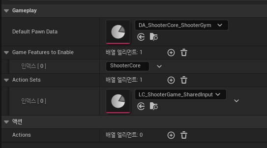
ActionSet내에서 Action들을 추가하면
플러그인에 액션들이 잘 바인딩된다.
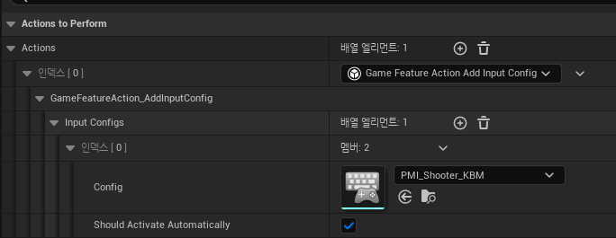
Action에 엘리먼트를 추가해보면 Index의 Key값에 따라 아래의 Value의 멤버들이 달라지는걸 볼 수 있다.이거 공부해보
GameFeatureData, ExperienceDefinition 둘 다 Action이 있는데 왜 나누어져 있을까?
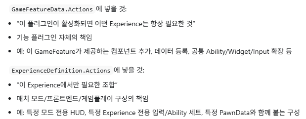
그니까 한마디로 FPS게임인데 화물밀기, 점령하기에서 공통적으로 사용할 부분이랑 아닌부분이 있기때문